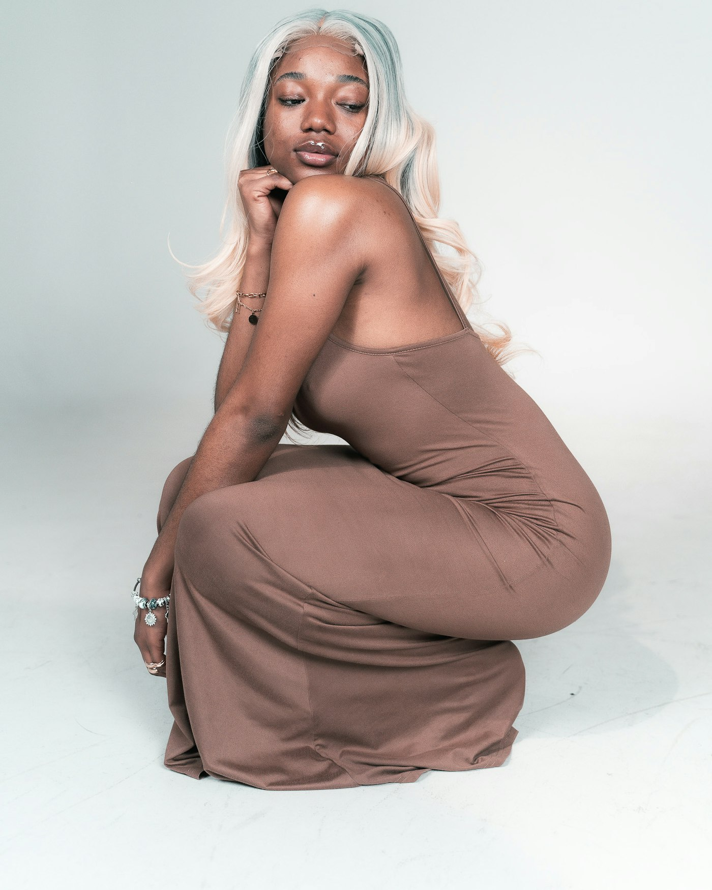

No. 01
The Ridge Sweater
Undyed Merino, five-gauge, knitted whole so there are no side seams to twist after washing.
₹9,800
Shown in Oat. Also in Peat and Slate. Forty made in this run.

Autumn — eight pieces
Undyed and naturally dyed yarn, knitted in runs of forty. When a run sells out we do not repeat it, because the next fleece will not be the same colour.
No. 01
Undyed Merino, five-gauge, knitted whole so there are no side seams to twist after washing.
₹9,800
Shown in Oat. Also in Peat and Slate. Forty made in this run.

No. 02
Lambswool and a little nylon at the elbow, because that is where every cardigan we have ever owned gave out first.
₹11,400
Shown in Umber. Horn buttons, replaced free if one goes missing.

The run
Every colour comes from one lot of yarn. We would rather sell out than dye a second batch to match the first, which never quite works anyway.
The yarn
Most of what we make is the natural colour of the fleece — oat, peat, moorit, slate. It is a narrow range and it is the honest one. Where we do dye, it is with madder, indigo or walnut, in small vats, and the result varies between batches in a way we are not going to apologise for.
Index